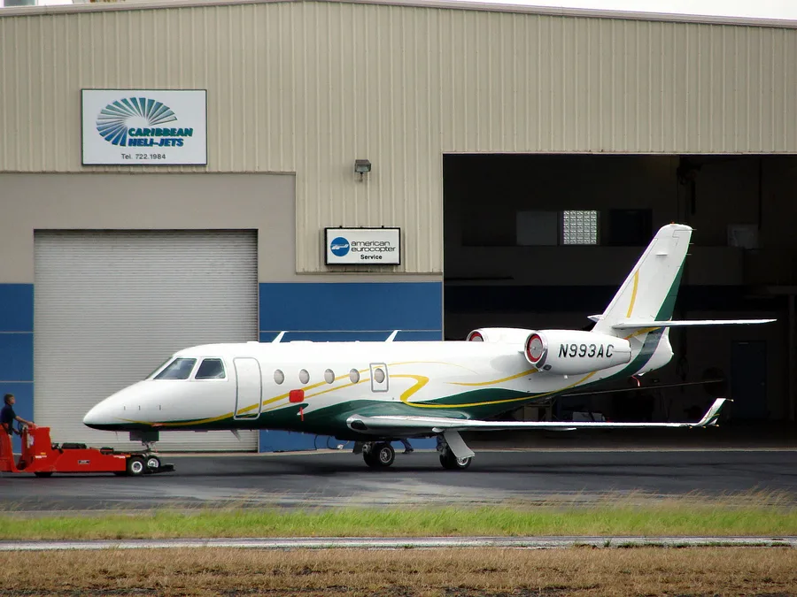

Gulfstream G150 (N22ST)
Runway overrun after an unstabilized approach at Ridgeland-Claude Dean Airport, South Carolina May 5, 2021, 10:33 EDT · Ridgeland-Claude Dean Airport (3J1)Serious outcome
No fatalities
Case summary
Cockpit recordings show the crew racing another jet to the airport, ignoring repeated 'sink rate' and 'pull up' warnings all the way to touchdown.

Twin-engine light business jet
What happened
Source: NTSB Final Report (excerpt)At 1031:35, the CVR recorded the sound of the autopilot being disconnected. About 1 minute later, the SIC remarked, "should we s-turn this thing?" The PIC replied, "nah we got it." At 1032:28, the airplane was on final approach about 900 ft above ground level (agl) and about 1.5 nautical miles from the runway threshold. At that time, the SIC called out an airspeed of 170 knots. (The reference landing speed [Vref] was 121 knots). The PIC responded to add full flaps. About 10 seconds later, the airplane's electronic voice announced "sink rate" and the SIC stated, "we know it." At 1032:46, the SIC called out an airspeed of 150 knots, and the electronic voice stated, "sink rate, sink rate, sink rate, pull up."
Why it happened
Source: NTSB Final Report"The National Transportation Safety Board determines the probable cause(s) of this accident to be: The flight crew's continuation of an unstable approach and the failure of the ground air brakes to deploy upon touchdown, both of which resulted in the runway overrun. Contributing was the crew's motivation and response to external pressures to complete the flight as quickly as possible to accommodate passenger wishes and the crew's decision to land with a quartering tailwind that exceeded the airplane's limitations."
- Flight crew's continuation of an unstable approach despite repeated "sink rate" and "pull up" warnings
- External pressure to beat another inbound airplane to the airport, which the crew described as a "race"
- Failure of the ground air brakes to deploy automatically upon touchdown
- Landing with a quartering tailwind of about 10–15 knots, exceeding the airplane's 10-knot tailwind limitation
- Touchdown about 1,000 ft down the 4,200-ft runway, leaving reduced distance to stop without full braking systems
Photos & media (3)
NTSB Airworthiness and Systems Factual Report, ERA21LA208At 1031:35, the CVR recorded the sound of the autopilot being disconnected. About 1 minute later, the SIC remarked, "should we s-turn this thing?" The PIC replied, "nah we got it." At 1032:28, the airplane was on final approach about 900 ft above ground level (agl) and about 1.5 nautical miles from the runway threshold. At that time, the SIC called out an airspeed of 170 knots. (The reference landing speed [Vref] was 121 knots). The PIC responded to add full flaps. About 10 seconds later, the airplane's electronic voice announced "sink rate" and the SIC stated, "we know it." At 1032:46, the SIC called out an airspeed of 150 knots, and the electronic voice stated, "sink rate, sink rate, sink rate, pull up."
"The National Transportation Safety Board determines the probable cause(s) of this accident to be: The flight crew's continuation of an unstable approach and the failure of the ground air brakes to deploy upon touchdown, both of which resulted in the runway overrun. Contributing was the crew's motivation and response to external pressures to complete the flight as quickly as possible to accommodate passenger wishes and the crew's decision to land with a quartering tailwind that exceeded the airplane's limitations."
- Flight crew's continuation of an unstable approach despite repeated "sink rate" and "pull up" warnings
- External pressure to beat another inbound airplane to the airport, which the crew described as a "race"
- Failure of the ground air brakes to deploy automatically upon touchdown
- Landing with a quartering tailwind of about 10–15 knots, exceeding the airplane's 10-knot tailwind limitation
- Touchdown about 1,000 ft down the 4,200-ft runway, leaving reduced distance to stop without full braking systems